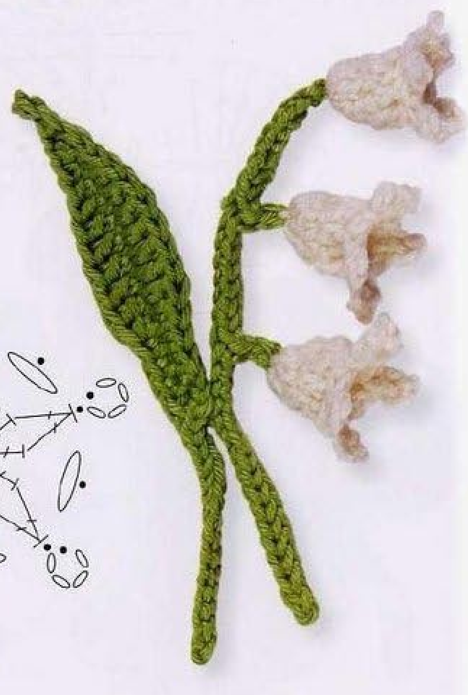
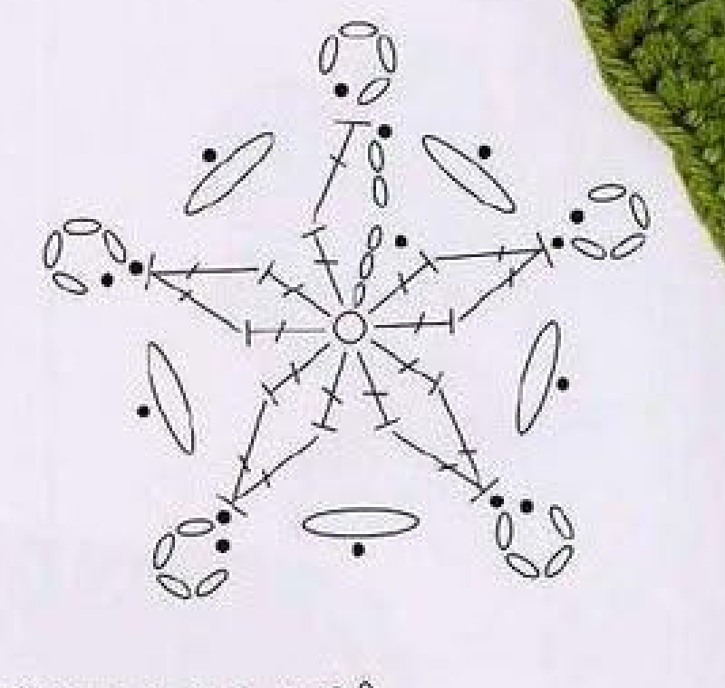
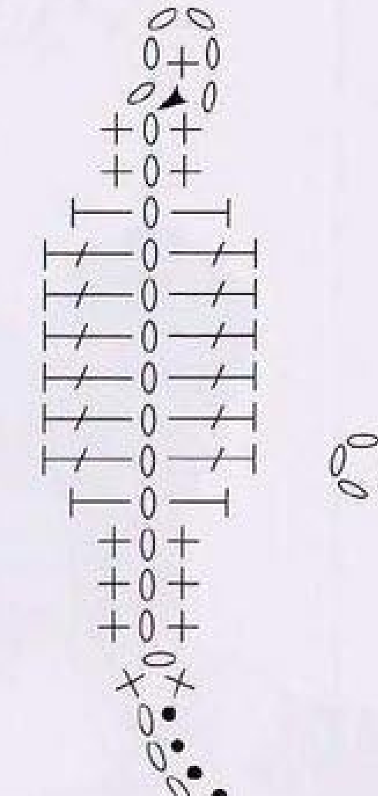
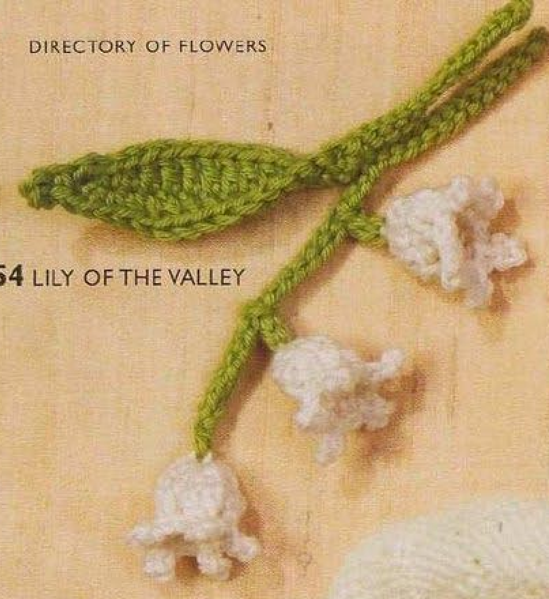

Crochet Lily of the Valley pairs three white bell-shaped flowers with a slender green branched stem and a separate elongated leaf. Each bell is made in three rounds, with paired decreases bringing the opening into shape and small chain picots around the rim. This guide follows pattern 54 in Lesley Stanfield’s 100 Flowers to Knit & Crochet, retaining its component counts and assembly in US crochet terms.

Key Takeaways
- Use 4-ply cotton in white A and green B.
- Make three identical white flowers from adjustable slip rings.
- Each flower starts with ten counted positions, then narrows through paired double-crochet decreases.
- Five four-chain picots form the bell rim.
- Make a green main stem with two side branches, then a separate leaf and leaf stem.
- Sew one flower to the stem top and one to each branch, then join stem and leaf.
CROCHET LILY OF THE VALLEY FLOWER PATTERN
Project: One sprig with three white bells, a branched stem, and one leaf. The source places this entry among intermediate designs. The recipe below is translated into US terms; hook, gauge, quantity, and finished dimensions are not specified.
| Skill level | Intermediate designs in the source. Familiarity with joined rounds, paired decreases, picots, and component assembly is helpful. |
|---|---|
| Base size | One sprig: 3 flowers, 1 main stem with 2 side branches, and 1 separate leaf with its stem. Measurements are not specified. |
| Yarn | 4-ply cotton in white A and green B. |
| Hook, gauge, quantity | Not specified. Choose a hook suited to your cotton and assess a completed bell and leaf. |
| Notions | Scissors and a blunt needle for invisible finishing and sewing the separate components. |
| US abbreviations | ch = chain; sc = single crochet; hdc = half double crochet; dc = double crochet; sl st = slip stitch; dc dec = dc2tog across the next 2 stitches; RS = right side. UK dc = US sc; UK htr = US hdc; UK tr = US dc. |
| Flower foundation, make 3 | With A, make an adjustable slip ring. |
| Flower round 1, RS | Ch 3, work 9 dc in the ring, pull the end to close the ring, and sl st to the top chain of the starting ch 3. 10 counted positions. |
| Flower round 2 | Ch 2, 1 dc in the next dc, ch 1; [dc dec across the next 2 dc, ch 1] 4 times. Sl st in the top of the first dc. |
| Flower round 3 | Ch 4, sl st in the first chain of that ch 4; [sl st in the next ch-1 space of round 2, sl st in the next decrease, ch 4, sl st in the first chain of that ch 4] 4 times. Sl st in the next chain space. Fasten off invisibly. |
| Main stem, green B | Ch 31. Skip 1 chain and sl st in each of the next 15 chains. [Ch 3, skip the first of those 3 chains, sl st in each of the next 2 chains; on the main stem, sl st in each of the next 7 chains] twice. Work 1 sc in the last main-stem chain. Fasten off invisibly. |
| Leaf, RS, green B | Ch 14. Skip 1 chain; sc in each of the next 3 chains, hdc in the next, dc in each of the next 6, hdc in the next, sc in each of the next 2. Ch 5, skip 3 chains, sc in the next chain, ch 1. Along the remaining strands of the original foundation: sc in each of the first 2 chains, hdc in the next, dc in each of the next 6, hdc in the next, sc in each of the next 3. Working in both strands: sc in the next chain, ch 15, skip 1 chain, sl st in each of the next 14 chains, sc in the next chain. Fasten off invisibly. |
| Making up | Sew one flower to the top of the main stem and one to each side branch. Join the main stem and leaf. |
Understand the Separate Components
This design is assembled from separate white flowers, a green branched stem, and a green leaf with its own returned chain stem. The flowers are not crocheted directly onto the branch tips. Make and finish each component before sewing it into the arrangement. The complete motif has three flowers, rather than an unspecified number of bells along a long vine.
The main stem begins as thirty-one chains and is worked back toward its base. Two short branches are introduced during that return. The leaf is worked around a fourteen-chain foundation with shorter stitches at its ends and taller doubles through its broader middle. Its own fifteen-chain returned stem is included in the leaf instructions.
The finished source photograph helps show how these parts sit together. One flower occupies the main stem’s top, and the other two are attached to side branches at different heights. The long leaf sits beside the flowering stem. It is a finished-work reference, while the two charts show the stitch routes used to create the components.
Choose Cotton and Prepare the Work
Use white 4-ply cotton as A and green 4-ply cotton as B. The source does not supply a brand, hook size, yardage, gauge, or measured finished size. Choose a hook that works comfortably with your cotton and make the first bell as a small construction check. Keep the white yarn consistent for all three bells so their proportions remain comparable.
Have a blunt needle available for ring ends, invisible fastening, and sewing. Small markers can help identify the beginning of each flower round or the remaining chains on the stem foundation. They are temporary counting aids, not additional stitches. Leave usable yarn ends for finishing rather than trimming tiny component ends before they have been secured.
The entry belongs to the book’s intermediate designs. Its challenge lies in keeping several short sequences distinct: counted turning chains, double-crochet decreases, four-chain picots, stem branch chains, and the return along the leaf foundation. Read the compact card before beginning and complete one component at a time.
US Terms and the Decrease Used in the Bell
The source’s UK treble crochet is US double crochet in this guide. Its UK double crochet becomes US single crochet, and half treble becomes US half double. The paired treble decrease in the original is therefore a US double-crochet decrease across two adjacent stitches, often written dc2tog.
For that decrease, yarn over, insert into the next stitch, draw up a loop, and draw through two loops. Leave the unfinished stitch on the hook. Repeat the partial double in the following stitch, then yarn over and draw through the remaining loops together. Two stitch bases now share one completed top.
Keep this decrease distinct from a same-space cluster. Each partial double here has its own base in the next two stitches of the preceding round. Putting both partial stitches into one base leaves another stitch unused and changes the shaping. The chart can help you check the paired bases before completing all four repeated decreases.
Decrease checkpoint: Round 2 uses adjacent stitch bases. Do not substitute a two-double cluster worked entirely into one stitch.
Step 1: Start the First White Bell
Make an adjustable slip ring in white A. With the right side facing, chain three and work nine US double crochets into the ring. Pull the starting end to close the ring, then join with a slip stitch into the top chain of the starting three-chain rise.
The source states ten stitches for this round: nine actual doubles plus the counted starting chain rise. Identify the top of the rise before joining so the circle closes at the intended height. Joining to the first actual double instead leaves the starting rise outside the counted route and complicates the next round’s pairs.
Close the center firmly enough to remove the loose opening while keeping the stitch tops accessible. Do not cut the ring end flush before securing it later. At this stage the small round may look flatter than the final bell; the decrease round and rim will establish the finished shape.
Step 2: Narrow the Bell with Paired Decreases
Begin round 2 with two chains, then work one US double crochet in the next double of round 1 and chain one. This is the source’s opening group. Continue with a double-crochet decrease across the next two doubles, followed by one chain. Repeat that bracketed decrease-and-chain group four times in total.
Join with a slip stitch in the top of the first actual double of this round, as the source directs. Do not change the join to the top of the two-chain start by habit. The printed opening group differs from the four worked decreases, and preserving its join keeps the rim route consistent with the chart.
The ten counted positions from round 1 are brought into five groups, with a one-chain gap after each. The opening two-chain rise and following double form the first group; the other eight bases are used in four paired decreases. Count the four actual decreases and all five one-chain gaps before proceeding.

Step 3: Add Five Four-Chain Rim Picots
Chain four, then slip stitch into the first chain of those four to form the opening picot. Next, slip stitch into the next one-chain gap of round 2, slip stitch into the next decrease, chain four, and slip stitch into the first chain of that new four-chain group. Work this bracketed sequence four times.
After the fourth repeat, slip stitch into the next chain gap and fasten off invisibly. There are five picots in total: the one made before the bracketed repeat and four more within it. The slip stitches between picots move around the decrease round; they are not additional picots or another round of white doubles.
Keep the little loops visible while tidying the end. Their arrangement forms the pointed rim of the bell in the finished example. If the rim is crowded, inspect the repeat locations and count rather than adding extra stitches to spread it. The source does not call for a sixth tip or a separate edging round.
Step 4: Make Two More Matching Bells
Repeat the complete three-round flower recipe twice more, starting each with its own adjustable slip ring. Check the ten-position first round, four repeated paired decreases, and five rim picots for each bell. Keeping the same cotton and working tension helps the three components form a coherent sprig.
Arrange the completed bells side by side before sewing. A slightly curled rim can make one look narrower until you gently position its picots. If the actual counts differ, correct the component now. Do not compensate for a missing picot by changing the stem branch length or placing that bell where the error is less visible.
Secure the starting ring ends and tidy the invisible finishes on the backs. Leave any attachment ends you plan to use for sewing. The source does not prescribe a measured tail length, so use enough yarn to attach each bell comfortably and secure the connection without drawing the cup closed.
Step 5: Make the Green Main Stem and Two Branches
With green B, chain thirty-one. Skip one chain and slip stitch into each of the next fifteen chains, returning along the main stem. Count this first return section carefully; the two side branches are made only after those fifteen main-foundation slip stitches.
For the first branch, chain three, skip the first of those three chains, and slip stitch in each of the next two. Then return to the original main-stem foundation and slip stitch into each of its next seven chains. Repeat that entire branch-and-seven-main-chain sequence once more for the second branch.
Work one US single crochet in the last main-stem chain and fasten off invisibly. The foundation count checks cleanly: one skipped chain, fifteen first-section slip stitches, two groups of seven main slip stitches, and one final single use all thirty-one chains. Each branch separately adds three chains with two return slip stitches.
Stem checkpoint: Branch chains belong to their own short returns. The two seven-chain sections are worked on the original thirty-one-chain main stem, not continued along a branch.
Keep the Two Green Stem Recipes Separate
The flower-bearing main stem begins with thirty-one chains and includes two branches. The leaf’s own stem begins with fifteen chains and has fourteen return slip stitches. These are different components, so do not replace one chain count with the other during assembly.
Step 6: Work the First Side of the Leaf
With green B and the right side facing, chain fourteen and skip one chain. Work single crochet in each of the next three chains, half double in the next, double in each of the next six, half double in the next, and single in each of the next two chains. These thirteen worked positions use the foundation after the skipped chain.
The six central doubles form the broader portion of the leaf. The surrounding half doubles and singles reduce the height toward its ends. Each stitch has its own foundation chain; this is not a fan with several doubles sharing one chain. Keep the remaining chain strands available for the return side.
Chain five, skip three chains, single crochet in the next chain, then chain one. Retain this short chain sequence exactly before returning along the original foundation. It provides the printed connecting route, and omitting it because the leaf already looks long enough changes the charted construction.

Step 7: Return Around the Leaf and Make Its Stem
Work in the remaining strands of the original foundation: single crochet in each of the first two chains, half double in the next, double in each of the next six, half double in the next, and single crochet in each of the next three. This returns along the opposite side with the same six-double middle section.
Now follow the source’s change of placement: working in both strands, single crochet in the next chain. Chain fifteen, skip one, and slip stitch into each of the next fourteen chains. Single crochet in the next chain, then fasten off invisibly. The fifteen-chain branch here is the leaf stem, not a new flower-bearing stem.
Use the leaf chart to follow the transition from the remaining foundation strands to the both-strand placements. Do not replace these connections with an unprinted sewn leaf base. The entry describes the leaf as worked in one round with the right side facing, so keep this route continuous rather than turning it into separate rows.
Step 8: Sew the Flowers and Join the Leaf
Sew one white flower to the top of the main green stem and one to each side branch. Compare the finished source arrangement while positioning the bells. Keep the cups and five-point rims visible rather than pulling the openings shut with tight attachment stitches.
Join the main stem and leaf as the source directs. Arrange the separate green pieces before securing them so the elongated leaf remains readable beside the three-flower stem. The entry does not supply a detailed sewing count or blocking measurement, so use stable crochet stitches for attachment and inspect both sides as you work.
Check all three flower connections and the leaf join before trimming ends. Follow your cotton-care instructions for any additional shaping. No pressing temperature or finished gauge is given here. Gentle positioning can help reveal the bell shapes without inventing stuffing, internal supports, or additional flower rounds.

Troubleshooting and Clearly Labeled Variations
If a bell has too many rim points, count the opening picot separately from the four bracketed repeats. If the main stem has leftover chains, recount its fifteen-plus-seven-plus-seven return sections and final single. If the leaf has an uneven outline, check both six-double middle groups and the change from remaining strands to both strands.
Changing cotton colors or yarn thickness is an optional adaptation, and a sample is needed to assess the resulting dimensions. Additional bells, more branches, or a different leaf shape change the source recipe. Suggested applique uses on a textile panel or accessory are application ideas, rather than separate projects supplied in this pattern entry.
Variation guidance: Keep the three-bell construction and both original stem recipes clear. Label changed flower counts or branch lengths as your own adaptation.
Lily of the Valley at a Glance
- Three white bells, each made in three rounds.
- Ten counted first-round positions and paired decreases in round 2.
- Five four-chain picots around each bell rim.
- One thirty-one-chain branched main stem and a separate leaf with a fifteen-chain stem.
- Sew flowers to the top and branches, then join stem and leaf.
Conclusion
Lily of the Valley brings several small components together into a recognizable cotton sprig. Complete and check each bell, keep the main and leaf stem counts separate, and arrange the pieces before sewing. The complete card preserves the source recipe in US terms, while the charts help follow the flower and leaf routes. Click the Pin to return to the pattern when you are ready to make the sprig.
Source and Tags
Source: Lesley Stanfield, 100 Flowers to Knit & Crochet, pattern 54 Lily of the Valley. Instructions and charts are on printed page 74, PDF page 68; the directory photograph is on printed page 40, PDF page 35. Source photographs show finished components assembled as a sprig, rather than progress photographs. The recipe is translated into US terminology, with additional practical suggestions distinguished from source specifications.
Lily of the ValleyCrochet FlowersCotton BellsBranched StemCrochet LeafUS Crochet Terms